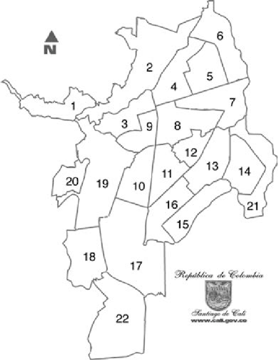

<br>
<br>
    <iframe
       width="800" height="453" style="border: 1px solid #000000; width: 800px; height: 453px;display: grid; margin-left: auto; margin-right: auto; margin-bottom: 5%" 
       src="http://localhost:3000/mapa/">
    </iframe>
  
    <div class="fb-comments" data-href="http://www.example.com/page.html" data-width="100%" data-numposts="5"></div>
    <div class="container">


  <!-- Modal -->
  <div class="modal fade" id="exampleModal" tabindex="-1" role="dialog" aria-labelledby="exampleModalLabel" aria-hidden="true">
    <div class="modal-dialog" role="document">
      <div class="modal-content">
        <div class="modal-header">
          <h5 class="modal-title" id="exampleModalLabel">Mapa de cali</h5>
          <button type="button" class="close" data-dismiss="modal" aria-label="Close">
            <span aria-hidden="true">&times;</span>
          </button>
        </div>
        <div class="modal-body">
          <!---->
         
          
        
        
        
        </div>
      <!--  <div class="modal-footer">
          <button type="button" class="btn btn-primary" data-dismiss="modal">Cerrar</button>
        </div>
      </div>-->
    </div>
  </div>
  
</div>
